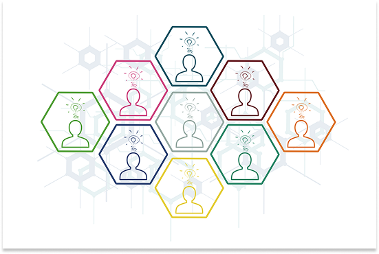

Empresa sustentável
Número 1 no mercado de tecnologia sustetável
A Dow combina química, biologia e física para criar tecnologias inovadoras que contribuem para o progresso da humanidade. Fornecendo visão e inovação para os mais diferentes mercados em todo o mundo com soluções essenciais para o progresso humano.
Quem Somos?
Ajudamos a proporcionar um futuro sustentável para o mundo por meio da nossa expertise em ciência dos materiais e da colaboração com parceiros. Saiba mais sobre nossa ambição, nossa equipe e nossas parcerias.
SAIBA MAISSUSTENTABILIDADE
Onde ficam as máquinas
Descubra onde estão localizadas nossas máquinas, os horarios de funcionamento, nossos objetivos com elas, os beneficios que elas podem trazer para o meio ambiente e para quem recicla e como elas podem contribuir para um futuro mais sustentável. Clique em "Saiba mais".
Sobre a ODS
Os Objetivos de Desenvolvimento Sustentável (ODS) são uma iniciativa global da Organização das Nações Unidas (ONU) que visa promover um futuro mais justo, equitativo e sustentável para todos. Descubra mais a respeito da ODS e como ela se aplica no nosso projeto.
Custos
Saiba mais a respeito de quais os materiasi que aceitos por nossas máquinas e os valores pagos por cada material depositado nela. Entenda mais a respeito dos beneficios em fazer a reciclagem de forma limpa correta. Para mais informações clique em "Saiba mais".